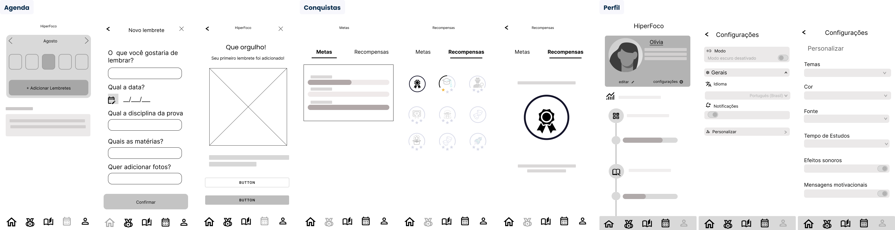
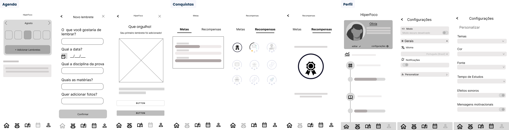

Estratégia de Negócio
A partir das ideias de solução priorizadas, utilizamos os frameworks
Value Proposition Canvas e
Business Model Canvas para considerar as necessidades dos estudantes com TDAH e identificar oportunidades de mercado. Além disso, realizamos um
benchmarking competitivo para entender o mercado e identificar lacunas e diferenciais que poderíamos oferecer.
Dado que a pesquisa mostrou que os participantes utilizam mais o celular, decidimos iniciar com um aplicativo mobile.

 
